Réfraction et réflexion de la lumière
Ce chapitre sera débloqué en fin de séquence, au rythme de la classe. Le code de déblocage est transmis via le cahier de textes — il figure aussi en bas de ta fiche de cours.
Sommaire du chapitre
Physique-Chimie · 2nde · Thème 3 — Ondes et signaux
Réfraction et réflexion de la lumière
Thème 3 · Chapitre 4 — cours & exercices corrigés
01 Propriétés de la lumière
La lumière se propage de manière rectiligne dans le vide ou dans un milieu transparent homogène ; sa trajectoire est modélisée par le rayon lumineux.
La lumière se propage à une vitesse finie appelée célérité. Dans le vide (et, en très bonne approximation, dans l'air), cette vitesse vaut environ 300 000 km par seconde :
c = 3,00 × 108 m·s−1
La première mesure terrestre de la célérité de la lumière est due à l'expérience de Fizeau (1849).
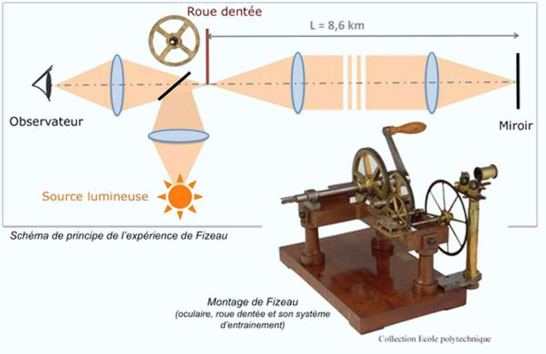
La distance Terre–Soleil vaut d = 1,50 × 108 km. Combien de temps met la lumière du Soleil pour nous parvenir ?
Données : d = 1,50 × 10⁸ km · c = 3,00 × 10⁸ m·s⁻¹
Voir la correction
Correction rédigée par Claude, calculs vérifiés — à valider : la source de ce chapitre est la version élève, elle ne contient aucun corrigé.
d = 1,50 × 108 km = 1,50 × 1011 m
Δt = d ⁄ c
Δt = 1,50 × 1011 ⁄ 3,00 × 108 = 500 s ≈ 8 min 20 s
02 Dioptre et réflexion
La réflexion de la lumière est le changement de direction qu'elle subit lorsqu'elle rencontre une surface de séparation entre deux milieux transparents — appelée dioptre — (ou une surface opaque réfléchissante) : elle repart alors dans le milieu d'où elle provient.
Un dioptre peut être la surface de l'eau, une face d'un prisme, la surface d'une lentille, etc. La droite perpendiculaire au dioptre, contenue dans le plan du trajet du rayon, est appelée normale (notée N).
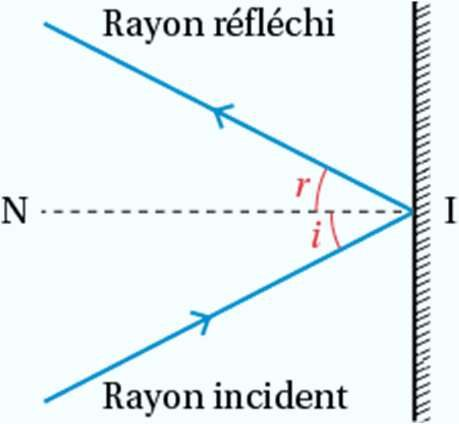
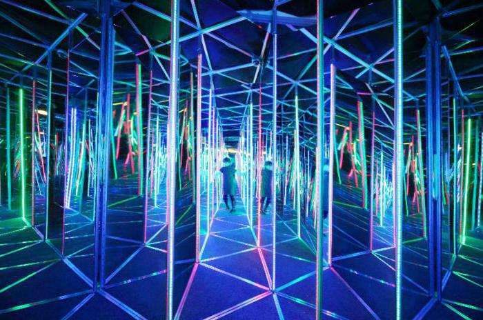
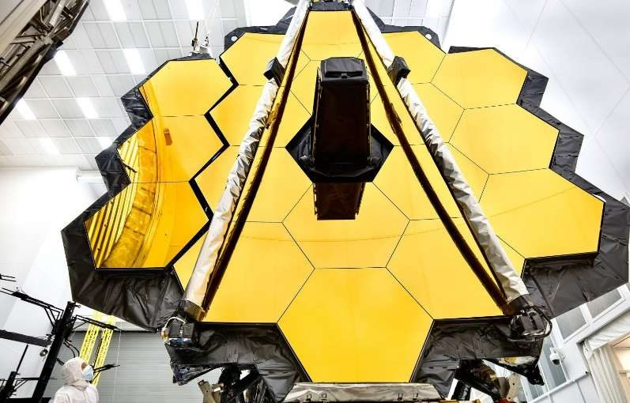
03 Phénomène de réfraction
A · Définition
La réfraction de la lumière est le changement de direction qu'elle subit à la traversée d'un dioptre. Ce phénomène perturbe notre perception des tailles et des distances (par exemple, un crayon plongé dans l'eau semble brisé).
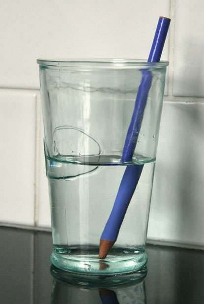
B · Indice de réfraction
L'indice de réfraction n d'un milieu transparent compare la célérité de la lumière dans le vide à sa vitesse v dans ce milieu. C'est un nombre sans unité, toujours supérieur à 1. Plus le milieu est dense, plus son indice est élevé (il dépend aussi de la température du milieu).
c célérité dans le vide · 3,00 × 108 m·s−1
v vitesse dans le milieu · m·s−1
| Milieu | n | Milieu | n |
|---|---|---|---|
| Vide | 1,000000 | Verre | 1,50 |
| Air | 1,00029 | Plexiglas | 1,51 |
| Glace | 1,31 | Verre crown | 1,52 |
| Eau | 1,33 | Polystyrène | 1,59 |
| Alcool | 1,36 | Sulfure de carbone | 1,63 |
| Quartz | 1,46 | Cristal anglais | 1,66 |
| Térébenthine | 1,47 | Zircon | 1,92 |
| Diamant | 2,42 | ||
| Phosphure de gallium | 3,50 |
Dans l'eau, la lumière se propage à la vitesse v = 225 564 km·s−1. Calculer l'indice de réfraction de l'eau.
Données : c = 3,00 × 10⁸ m·s⁻¹
Voir la correction
Correction rédigée par Claude, calculs vérifiés — à valider : la source de ce chapitre est la version élève, elle ne contient aucun corrigé.
v = 225 564 km·s−1 = 2,25564 × 108 m·s−1
n = c ⁄ v
n = 3,00 × 108 ⁄ 2,25564 × 108 ≈ 1,33
On mesure pour une eau un indice de réfraction n = 1,333. À l'aide du graphe donnant l'indice de l'eau en fonction de la température, en déduire la température de cette eau.
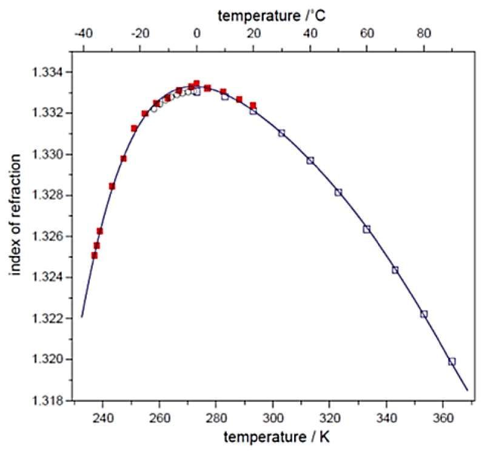
Voir la correction
Correction rédigée par Claude, calculs vérifiés — à valider : la source de ce chapitre est la version élève, elle ne contient aucun corrigé.
La courbe monte jusqu'à un maximum (voisin de 1,3333 vers 277 K, soit environ 4 °C) puis redescend : une valeur de n peut donc correspondre à deux températures. Sur la branche décroissante — la seule qui concerne l'eau liquide d'un laboratoire — on lit n = 1,333 pour :
θ ≈ 10 °C (soit environ 283 K)
Précision de lecture : le graphe se lit à ± 0,0002 près sur n, ce qui laisse une plage d'environ 5 à 13 °C. L'autre solution, sur la branche montante, se situe vers −10 °C : c'est de la glace surfondue, hors sujet ici.
C · Première loi de Snell-Descartes
Quand un rayon incident arrive sur un dioptre, on observe un rayon réfracté (qui traverse le dioptre en étant dévié) et un rayon réfléchi (qui repart dans le milieu initial).
Première loi de Snell-Descartes : le rayon incident, le rayon réfracté, le rayon réfléchi et la normale au point d'incidence sont tous dans un même plan, appelé plan d'incidence.
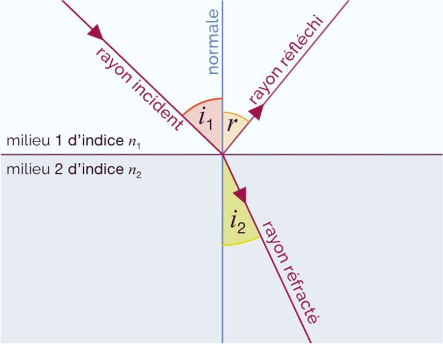
- I : le point d'incidence — là où le rayon rencontre le dioptre ;
- i1 : l'angle d'incidence, entre le rayon incident et la normale ;
- i2 : l'angle de réfraction, entre le rayon réfracté et la normale ;
- r : l'angle de réflexion, entre le rayon réfléchi et la normale.
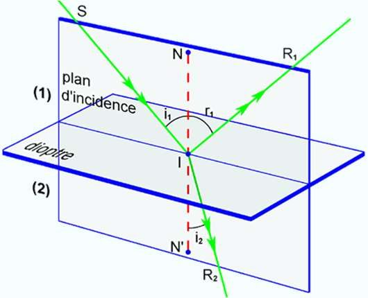
D · Deuxième loi de Snell-Descartes
Deuxième loi de Snell-Descartes : les angles d'incidence i1 et de réfraction i2 (mesurés par rapport à la normale) sont reliés aux indices des deux milieux.
i1 angle d'incidence · °
i2 angle de réfraction · °
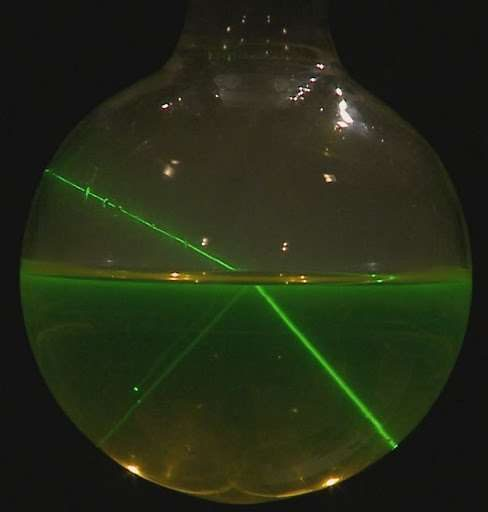
Un rayon passe de l'eau (n1 = 1,33) au plexiglas (n2 = 1,50) avec un angle d'incidence i1 = 45°. Calculer l'angle de réfraction i2.
Données : n₁(eau) = 1,33 · n₂(plexiglas) = 1,50 · i₁ = 45°
Voir la correction
Correction rédigée par Claude, calculs vérifiés — à valider : la source de ce chapitre est la version élève, elle ne contient aucun corrigé.
sin(i2) = n1 × sin(i1) ⁄ n2
sin(i2) = 1,33 × sin(45°) ⁄ 1,50 = 1,33 × 0,707 ⁄ 1,50 ≈ 0,627
i2 ≈ 38,8°
E · Cas limite : la réflexion totale
Quand la lumière passe d'un milieu vers un milieu moins réfringent (n2 < n1), le rayon réfracté s'écarte de la normale. Au-delà d'un angle limite d'incidence, il n'y a plus de rayon réfracté : toute la lumière est réfléchie — c'est la réflexion totale.
Le sens de la déviation dépend des deux indices :
- si le milieu 2 est plus réfringent que le milieu 1 (n2 > n1), le rayon se rapproche de la normale : i2 < i1 ;
- si le milieu 2 est moins réfringent (n2 < n1), le rayon s'écarte de la normale : i2 > i1.
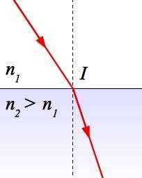
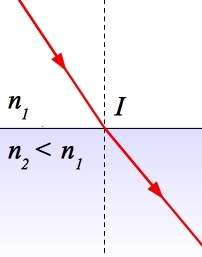
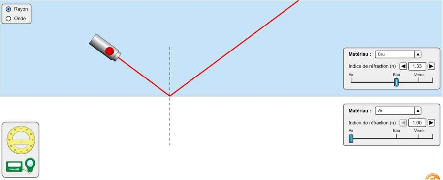
Un rayon passe de l'eau (n1 = 1,33) vers l'air (n2 = 1,00). La réflexion totale se produit lorsque l'angle de réfraction atteint imax = 90°.
1 — Retrouver l'angle d'incidence limite ilim à l'aide de l'animation PhET ci-dessus. 2 — Calculer ilim.
Données : n₁(eau) = 1,33 · n₂(air) = 1,00
Voir la correction
Correction rédigée par Claude, calculs vérifiés — à valider : la source de ce chapitre est la version élève, elle ne contient aucun corrigé.
n1 × sin(ilim) = n2 × sin(90°)
sin(ilim) = n2 ⁄ n1 = 1,00 ⁄ 1,33 ≈ 0,752
ilim ≈ 48,8°
Au-delà de cet angle, le rayon est totalement réfléchi dans l'eau.
04 La réfraction au quotidien
A · Effet de l’atmosphère
Le soir, les rayons du Soleil traversent l'atmosphère avec un angle d'incidence très élevé : ils sont d'autant plus réfractés. Nous voyons donc encore le Soleil alors qu'il est déjà passé sous l'horizon, ce qui lui donne aussi une forme légèrement aplatie.
B · Mirages
Lorsque le sol est très chaud, il chauffe l'air à son contact : l'écart de température modifie l'indice de réfraction de l'air, les rayons se courbent et l'on voit se refléter le bleu du ciel sur le sol (mirage chaud). À l'inverse, l'air refroidi près de la surface de la mer courbe les rayons dans l'autre sens (mirage froid).
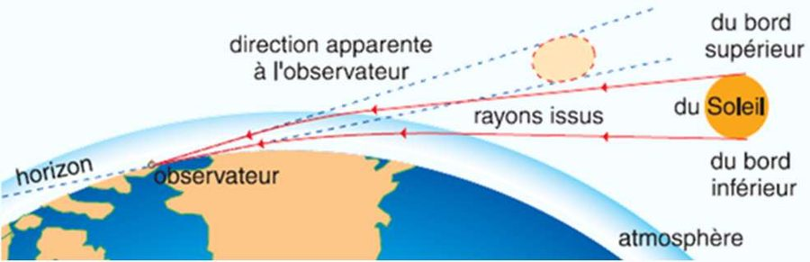
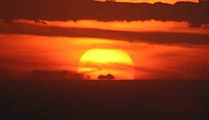
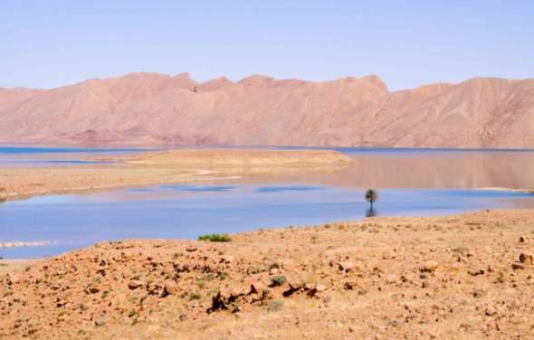
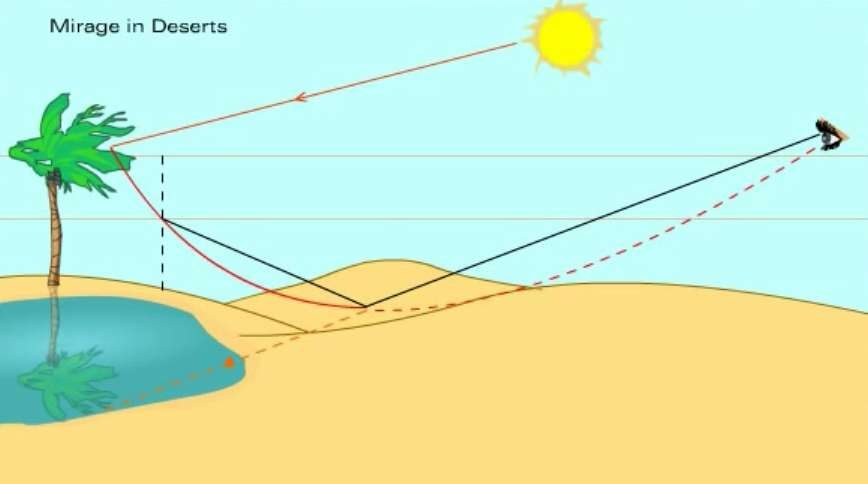
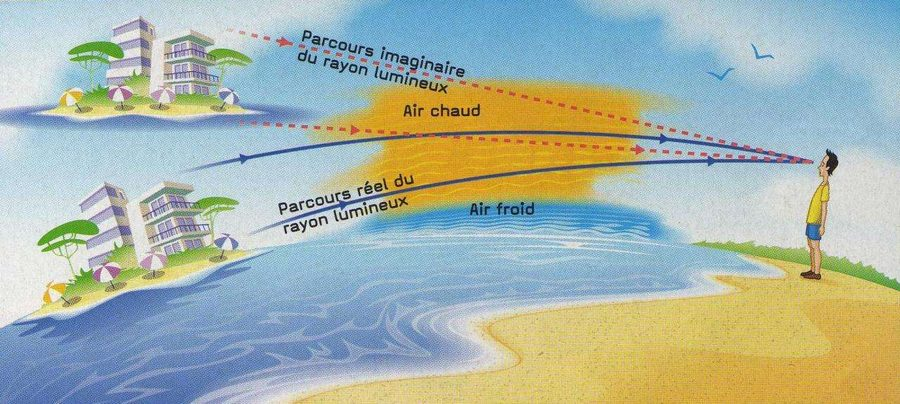
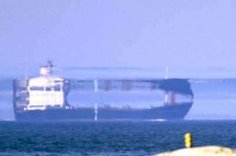
C · Briller en société
Deux expériences classiques illustrent la réfraction : celle du crayon cassé (un crayon plongé dans l'eau paraît brisé au niveau de la surface) et celle de la pièce de monnaie cachée qui réapparaît lorsqu'on verse de l'eau dans le récipient.
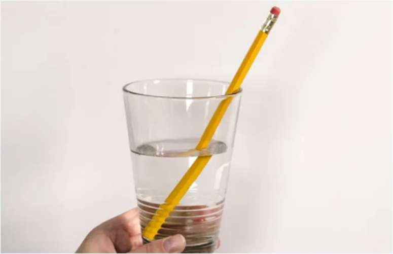
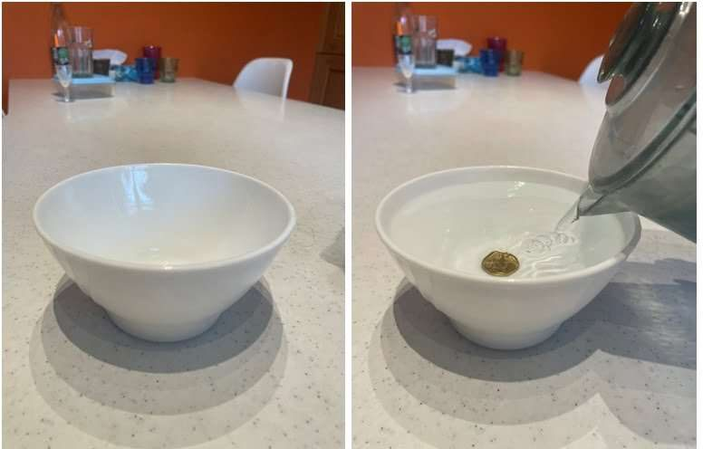
✓ Pour le DS, je sais :
- 01 · 18 p.279 / 20 p.281
- 02 · 03
- 03 · 10 p.295 / 20 p.296
- 03 · 14 p.296 / 20 p.296
- 03 · 12 p.295 / 24 p.298 / 20 p.296
- 04
M. Van HoordeLycée général Isaac de l'Étoile · Poitiers